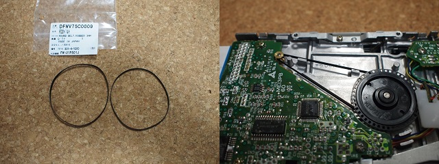
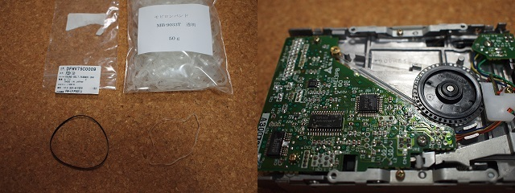
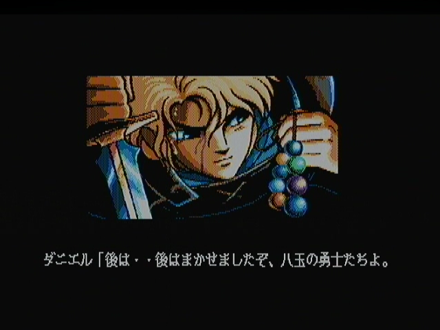
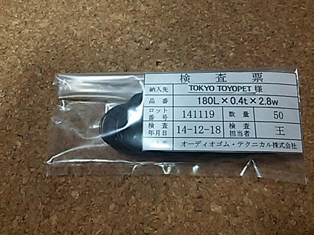

ディスクドライブ
パナソニックのディスクドライブは、ディスクを回転させるのにゴムベルトを使っているため、5年程度でゴムが伸びてしまい、ディスクが回転しなくなってしまいます。修理に出すのも手ですが、少し腕に自信があれば、保守部品としてゴムベルトを注文して自分で交換することも可能です。修理費の節約になります。その場合、保守部品で下記の部品を入手するのが一番です。
・品番 DFWV75C0007 A1F用
・品番 DFWV75C0009 A1WX以降用
・価格 200円
しかし、A1F用はA1WX以降用に統合されてなくなっているという噂があります。また、2014/8/31時点で保守部品として入手不可になっているようです。
代替品として使えるという噂があるのは以下の物になります。
・販売 千石電商
・品名 ゴムベルト(平) φ57x0.4x2.2
・価格 326円

折径約90mmでDFWV75C0009と同じ大きさのようですが、DFWV75C0009は幅2.8mm、千石電商のベルトは幅2.2mmですのでちょっと細いようです。こちらでの確認では、A1WXは動作しましたがA1STは正常に動作せず。細い分、ゴムが伸びてうまくタイミングが合わなくなるのかも知れません。とりあえず2本使うとA1STでもなんとか動作しました。
その他には、ネットでファミコンのディスクシステム用のベルト代用品として日清紡ケミカル株式会社のモビロンバンドが使われているという噂があります。安い物ならヤフオクで10本118円（送料込みで200円？）とかで売られていたりします。一般売りを調べてみると、株式会社スギタさんで50g(約230本!) 434円(税込み)、メール便なら送料が+82円とのこと。他のところだと100g売りで約1,000円とかですが、そんなに多くてもヤフオクでさばくしかないので・・・。こちらも折径90mm（=φ57mm）ですが、幅が3.0mmですのでちょっと太いようです。
・販売 株式会社スギタ
・品名 モビロンバンド 折径90mm 50g（約230本） 透明 通常[ディスクシステム対応]
・価格 467円

ゴムベルトはぼろぼろになってしまいますが、モビロンバンドはポリウレタン製なので長持ちするようです。ただし、長期間使った場合の緩みやすさが分からないのと、表面がゴムベルトと比べてすべりやすいかな、という感じはあります。モビロンベルトは伸縮性があって輪ゴムの代用品として売られていますので、多少（多々？）余ってもケーブル類をまとめたりと輪ゴムの代わりとしていくらでも使い道があるのでお試しで買ってみるのはありかも知れません。
A1WXで一応、BURAIのオープニングが見られました。S端子での取り込みは綺麗ですね。

しかし、こちらもA1STではうまく動かないようです。2本使ってみましたが同じでした。
にがさんのサイトでも紹介されているように、A1WXとA1STのドライブは似ていますが、細かい点で若干異なります。ディスクの回転に必要な力がA1STのドライブの方が強く、すべすべのモビロンバンドや千石電商の若干細いゴムベルトだと力がうまく伝わらないのかも知れません。
モビロンバンドには"洗浄タイプ"なるものがあり、「くっつき防止のための表面油剤・微粉末を軽減したタイプ」と書かれています。確かにディスク駆動のためには滑らずにしっかり力を伝えることが大事です。しかし折径90mmには洗浄タイプがありません。問い合わせたところ「ご自宅で洗濯することにより洗浄タイプにできます。」とのご回答を頂きました。洗濯は大げさなので・・・とりあえず石鹸を使って洗ってみました。確かにすべすべ感が無くなって滑りにくくなりました。しかし、やはりA1STではどうさせず。音がうねっているので、モビロンバンドが伸び縮みしてディスクの回転が安定していないのかも知れません。
千石電商のゴムベルト2本使いはちょっと不便なので・・・色々検索してみたところ、オーディオゴム・テクニカル株式会社さんで作ってくれることが分かりました。寸法を多少ラフにお伝えしたのですが、よくご存じなのか「180L x 0.4t x 2.8w」と教えて頂きました。ちなみに180L=折り径90mm=φ57mmということになります。1本300円(税抜き)で、最小発注単位が50本のため、300円x50本+1500(消費税)で16,500円とかなり高く付きますが、A1STでも正常に動作しました。もちろん1本での動作です。
・販売 オーディオゴム・テクニカル株式会社
・品名 180L x 0.4t x 2.8w（50本）
・価格 16,500円

ついでにA1Fのディスクドライブの信号出力は、下記の通りです。
１ ＮＣ ２ ＲＥＡＤＹ
３ ５Ｖ ４ ＩＮＤＥＸ
５ ５Ｖ ６ ＤＲＩＶＥ ＳＥＬＥＣＴ ０
７ ５Ｖ ８ ＮＣ
９ ５Ｖ １０ ＳＩＤＥ ＳＥＬＥＣＴ
１１ ５Ｖ １２ ＭＯＴＯＲ ＯＮ
１３ ５Ｖ １４ ＤＩＲＥＣＴＩＯＮ
１５ ＧＮＤ １６ ＳＴＥＰ
１７ ＧＮＤ １８ ＷＲＩＴＥ ＤＡＴＡ
１９ ＧＮＤ ２０ ＷＲＩＴＥ ＧＡＴＥ
２１ ＧＮＤ ２２ ＴＲＡＫ００
２３ ＧＮＤ ２４ ＷＲＩＴＥ ＰＲＯＴＥＣＴ
２５ ＧＮＤ ２６ ＲＥＡＤ ＤＡＴＡ
もし、2台目のディスクとして増設する場合は、2台目のディスクドライブのDRIVE SELECT信号は1台目のドライブの6番ピンとつなげてはいけません。TC8566Fの68番ピン（DRIVE SELECT 2）とつなげてください。また、READY信号にも注意する必要があります。
ちなみに、Ａ１ＷＸ以降では
１ ５Ｖ ２ ５Ｖ
３ ＮＣ ４ ５Ｖ
５ ５Ｖ ６ ＲＥＡＤＹ
７ ＧＮＤ ８ ＧＮＤ
９ ＳＩＤＥ ＳＥＬ １０ ＧＮＤ
１１ ＲＥＡＤ ＤＡＴＡ １２ ＷＲ ＰＲＯＴＥＣＴ
１３ ＴＲＡＣＫ００ １４ ＷＲＩＴＥ ＧＡＴＥ
１５ ＧＮＤ １６ ＷＲＩＴＥ ＤＡＴＡ
１７ ＧＮＤ １８ ＳＴＥＰ
１９ ＤＩＲＥＣＴＩＯＮ ２０ ＭＯＴＯＲ ＯＮ
２１ ＮＣ ２２ ＤＲＩＶＥ ＳＥＬＥＣＴ
２３ ＩＮＤＥＸ ２４ ＤＩＳＫ ＣＨＡＮＧＥ
24番ピンのDISK CHANGE信号はA1ST以降のみにあります。
いずれの信号もドライブの同名の信号と接続してください。ただし、DRIVE SELECT信号は1台目DRIVE SELECT1を、2台目ならDRIVE SELECT2と接続してください。A1ST以降にあるFDD増設用のパターンにはDRIVE SELECT2が出てきています。また、2DD専用のディスクドライブの場合、ドライブ側の2番ピンがDISK CHANGE信号である場合が多いですが、2HD/2DD共用のドライブの場合、4番ピンのHEAD LOAD信号とつなげたらDISK CHANGE信号として機能したという噂もあります。
大昔、丹青通商で購入したMATSUSHITA製JU-253A11Mのピンは位置は以下の通りでした。JU-253は2DD専用ドライブですがレビジョンがいくつかあるようで、ネットで検索すると設定用のジャンパが12本で12Vを使うタイプもあるようです。丹青通商で購入したものはジャンパが8本で5Vで動くものでした。
１ ＲＥＳＥＴ ２ ＤＩＳＫ ＣＨＡＮＧＥ
３ ＮＣ ４ ＩＮ ＵＳＥ
５ ＧＮＤ ６ ＤＲＩＶＥ ＳＥＬＥＣＴ ３
７ ＧＮＤ ８ ＩＮＤＥＸ
９ ＧＮＤ １０ ＤＲＩＶＥ ＳＥＬＥＣＴ ０
１１ ＧＮＤ １２ ＤＲＩＶＥ ＳＥＬＥＣＴ １
１３ ＧＮＤ １４ ＤＲＩＶＥ ＳＥＬＥＣＴ ２
１５ ＧＮＤ １６ ＭＯＴＯＲ ＯＮ
１７ ＧＮＤ １８ ＤＩＲＥＣＴＩＯＮ ＳＥＬＥＣＴ
１９ ＧＮＤ ２０ ＳＴＥＰ
２１ ＧＮＤ ２２ ＷＲＩＴＥ ＤＡＴＡ
２３ ＧＮＤ ２４ ＷＲＩＴＥ ＧＡＴＥ
２５ ＧＮＤ ２６ ＴＲＡＣＫ ００
２７ ＧＮＤ ２８ ＷＲＩＴＥ ＰＲＯＴＥＣＴ
２９ ＧＮＤ ３０ ＲＥＡＤ ＤＡＴＡ
３１ ＧＮＤ ３２ ＳＩＤＥ ＳＥＬＥＣＴ
３３ ＧＮＤ ３４ ＲＥＡＤＹ
1 RESETと4 IN USEはホスト側からの信号ですが特につなげなくても問題ないようです。
一般的に出回っている2HD対応のディスクドライブでは、READY信号がないものがほとんどです。しかしながら、ノートPC等で使用される薄型ドライブでは、なぜかREADY信号を持っています。サークル "Lost Technology" さんからMSXに接続するための変換基板がでており、家電のケンちゃん等で販売されています。それを使用すれば信号的にはつながりますが、薄型ドライブですので、そのままではMSX本体に内蔵・固定することができません。